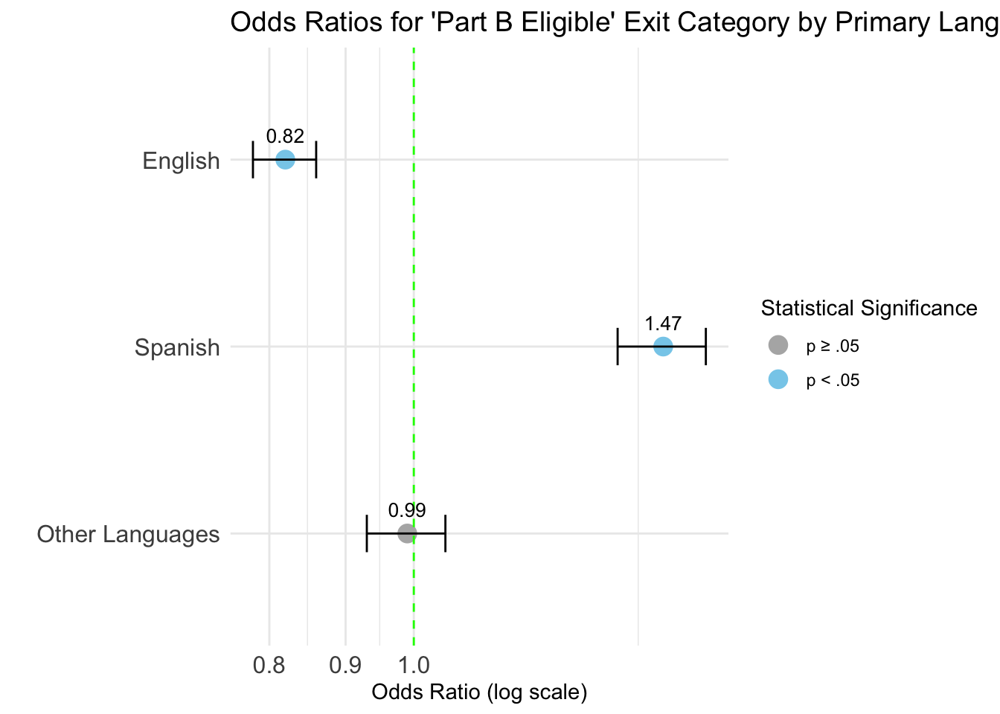

# ✅ Step 1: Load aggregated 3-group language data and compute Not Part.B.Eligibleagg_lang_3group <-read.csv("/Users/hata/Desktop/EDLD652_Diss/Data/agg_by_lang_3group.csv")df_lang_eligible <- agg_lang_3group %>%mutate(Not_Eligible =rowSums(select(., -Primary.Language, -Part.B.Eligible)))
# ✅ Step 2: Compute Oregon-wide totals for Part B Eligible and Not Eligibletotal_eligible_all <-sum(df_lang_eligible$Part.B.Eligible)total_noteligible_all <-sum(df_lang_eligible$Not_Eligible)
# ✅ Step 3: Define function to calculate odds ratio for Part B Eligibility by languageget_eligible_or <-function(row_index) { group <-as.character(df_lang_eligible$Primary.Language[row_index]) a <- df_lang_eligible$Part.B.Eligible[row_index] b <- df_lang_eligible$Not_Eligible[row_index] c <- total_eligible_all - a d <- total_noteligible_all - bif (any(is.na(c(a, b, c, d))) ||any(c(a, b, c, d) <0)) {return(NA) } mat <-matrix(c(a, b, c, d), nrow =2, byrow =TRUE)dimnames(mat) <-list(Group =c(group, "Oregon Average"),Exit =c("Part B Eligible", "Not Eligible") )oddsratio(mat)}
# ✅ Step 4: Loop through each language group to calculate odds ratioslanguage_list <-seq_len(nrow(df_lang_eligible))eligible_odds_results <-lapply(language_list, get_eligible_or)names(eligible_odds_results) <- df_lang_eligible$Primary.Language
# ✅ Step 6: Order languages as English, Spanish, Other Languagessummary_df_odds_eligible_lang$Primary.Language <-factor( summary_df_odds_eligible_lang$Primary.Language,levels =c("English", "Spanish", "Other Languages"))
# ✅ Step 6.5: Reorder factor levels so plot appears English → Spanish → Other Languages (top to bottom)summary_df_odds_eligible_lang$Primary.Language <-factor( summary_df_odds_eligible_lang$Primary.Language,levels =rev(c("English", "Spanish", "Other Languages")) # reversed so English appears at top in plot)
# ✅ Step 7: Forest plot for 'Part B Eligible' exit category by Primary Languageggplot(summary_df_odds_eligible_lang, aes(x = Odds_Ratio, y = Primary.Language)) +geom_point(aes(color = P_Value <0.05), size =4) +geom_errorbarh(aes(xmin = Lower_CI, xmax = Upper_CI), height =0.2) +geom_vline(xintercept =1, linetype ="dashed", color ="green") +geom_text(aes(label =sprintf("%.2f", Odds_Ratio)), vjust =-1.2, size =3.5) +scale_x_log10() +scale_color_manual(values =c("TRUE"="skyblue", "FALSE"="gray70"),labels =c("FALSE"="p ≥ .05", "TRUE"="p < .05") ) +labs(x ="Odds Ratio (log scale)",y ="",color ="Statistical Significance",title ="Odds Ratios for 'Part B Eligible' Exit Category by Primary Language (Oregon)" ) +theme_minimal() +theme(axis.text.y =element_text(size =12),axis.text.x =element_text(size =12),plot.title =element_text(size =14) )

# ✅ Step 8: Compute Cohen’s h values for Part B Eligible by language groupdf_lang_eligible <- df_lang_eligible %>%mutate(Total_Exits = Part.B.Eligible + Not_Eligible)total_exits_all <-sum(df_lang_eligible$Total_Exits)compute_cohens_h <-function(p1, p2) {2*abs(asin(sqrt(p1)) -asin(sqrt(p2)))}cohens_h_values <-numeric(nrow(df_lang_eligible))for (i inseq_len(nrow(df_lang_eligible))) { p1 <- df_lang_eligible$Part.B.Eligible[i] / df_lang_eligible$Total_Exits[i] other_eligible <- total_eligible_all - df_lang_eligible$Part.B.Eligible[i] other_total <- total_exits_all - df_lang_eligible$Total_Exits[i] p2 <- other_eligible / other_total cohens_h_values[i] <-compute_cohens_h(p1, p2)}summary_df_odds_eligible_lang$Cohens_h <-round(cohens_h_values, 2)